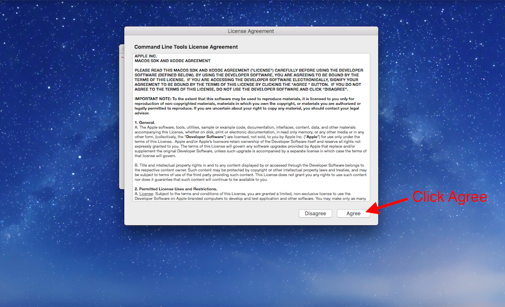

5 What are Git and GitHub?
This tutorial refers to Git and GitHub repeatedly. Git is a widely-used version control system used to manage code. Git allows you to save drafts of your code so that you can look back at previous versions and potentially undo complicated errors. A project managed with Git is called a Git repository.
GitHub is a popular hosting service for Git repositories. GitHub allows you to store your local Git repositories in the cloud. With GitHub, you can backup your personal files, share your code, and collaborate with others.
In short, GitHub is a tool for working with Git. There are other services to host Git repositories, but GitHub is a trusted, free service used by organizations across the world, big and small.
5.1 Create a GitHub Account
To use GitHub, you will need a GitHub account.
In your own browser:
- Open a new browser tab
- Navigate to https://github.com/
- Create an account
If you already have a GitHub account, continue to the next exercise.
After you sign up, you will receive a verification e-mail. Be sure to verify your e-mail address to GitHub by following the instructions in that e-mail.
5.2 Git Setup for Mac and Windows
Next, we will set up Git on your personal computer. Follow the instructions for your operating system.
5.2.1 Mac users:
Launch the Terminal application. You can find it in Applications/Utilities. You can also use the Spotlight search tool (the little magnifying glass in the top right of your screen) to search for Terminal. Once Spotlight locates it, click on the result that says Terminal.
When Terminal opens, type in
gitand press enter.If you don’t already have Git installed, a dialog will appear saying that “The ‘git’ command requires the command line developer tools. Would you like to install the tools now?” Click “Install”.
Fig 1 Git and Bash setup for Mac; installation of Git (image taken from Codecademy)
{kind=link}
Then click “Agree to the Terms of Service” when requested.
 Fig 2 Git and Bash setup for Mac; License Agreement (image taken from Codecademy
{kind=link}
- When the download finishes, the installer will go away on its own signifying that Git is now installed! Click “Done” to finish the installation process.
Fig 3 Git and Bash setup for Mac; successful installation (image taken from Codecademy)
{kind=link}
Navigate to GitHub’s articles on setting up your Git username and email and follow the instructions for each using Terminal.
GitHub offers two authentication options, HTTPS and SSH, to keep your work secure. This is a security measure that prevents anyone who isn’t authorised from making changes to your GitHub repository. In this article, we will use HTTPS. Navigate to GitHub’s article on creating a personal access token and follow the instructions to configure your computer to be able to use HTTPS.
Note: As of August 13th, 2021, GitHub uses tokens instead of passwords to authenticate Git operations. More details can be found in GitHub’s blog post.
5.2.2 Windows users:
This portion of the guide assumes you have already installed a program called Git Bash which allows us access to Git on Windows. If you have not installed Git Bash, please refer to the previous tutorial on Command Line Interface (CLI) Setup and follow the instructions for installing Git Bash on Windows. Once you complete that you can continue with this guide.
- Open the Start menu and search for the app, git bash. You should see ‘Git Bash Desktop app’ appear. Press Enter or click on the Git Bash icon to open the app.
Fig 4 Git and Bash setup for Windows; Open Git Bash (image taken from Codecademy)
{kind=link}
A new window will open that looks like this:
Fig 5 Git* and Bash setup for Windows; visualisation of the git bash cell (image taken from Codecademy)
{kind=link}
This window is our CLI, where we will use our Git commands.
- If you want to make sure that Git is installed, run
git --versionin the CLI. You should see a response that gives you the version of Git installed. It will look like this:
Fig 6 Git and Bash setup for Windows; check your Git version (image taken from Codecademy)
{kind=link}
Git can now be used in the Git Bash app!
Navigate to GitHub’s articles on setting up your Git username and email and follow the instructions for each using Git Bash.
GitHub offers two authentication options, HTTPS and SSH, to keep your work secure. This is a security measure that prevents anyone who isn’t authorized from making changes to your GitHub repository. In this article, we will use HTTPS. Navigate to GitHub’s article on creating a personal access token and follow the instructions to configure your computer to be able to use HTTPS.
Note: As of August 13th, 2021, GitHub uses tokens instead of passwords to authenticate Git operations. More details can be found in GitHub’s blog post.
5.3 Create your first repository
Now you have everything you need to practice your Git skills on your local computer. Take a moment to run the commands below to initialize a Git repository. We will use this Git repository again later in this tutorial so make sure you complete these steps exactly as described.
mkdir git_practiceto make a new directory to practice.cd git_practiceto make the new directory your working directory.git initto turn the current, empty directory into a fresh Git repository.echo "Hello Git and GitHub" >> README.txtto create a new README file (more on this later) with some sample text.git add README.txtto add the new file to the Git staging area.
5.4 Your First Remote Repository on GitHub
Finally, we’ll create a repository on GitHub and then link it to a local repository on your computer. This allows you to backup your work constantly and safely, so you never need to worry about losing your work again!
Now, let’s connect our local Git repository to GitHub.
5.4.1 Instructions
In your Command Line Interface, make sure your current working directory is your new Git repository. Navigate there if not.
Check the status of which files and folders are new or have been edited. There should be no files modified. (run this command in your terminal
git status).On GitHub, create a new repository by clicking the New repository button on the home page. Fig 7 Graphic User Interface of Github; by clicking on the button “New repository” you tell Github to create a remote Github repository (image taken from Codecademy)
On the new repository page, give your repository a name. It’s not necessary, but it would be convenient to name it the same as the directory, git_practice. After naming the repository, click Create repository.
{kind=link}
 Fig 8 Graphic User Interface of Github; Give your repository a short but descriptive name (hint: make sure to separate different words either with underscores or hyphens, because this will prevent git from throwing an error). After you give some additional information for different aspects of your Github repository, click on the button “Create Repository”(image taken from Codecademy)
Fig 8 Graphic User Interface of Github; Give your repository a short but descriptive name (hint: make sure to separate different words either with underscores or hyphens, because this will prevent git from throwing an error). After you give some additional information for different aspects of your Github repository, click on the button “Create Repository”(image taken from Codecademy)
{kind=link}
- After creating a repository, GitHub displays the repository page. At the top of the page, make sure “HTTPS” is selected.
Fig 9 Populating a remote repository using “HTTPS” (image taken from Codecademy)
{kind=link}
6.The repository is empty, so it’s time to connect it to your existing work. Copy the Git commands on the GitHub page, under the title “…or push an existing repository from the command line”, and paste them into your Command Line Interface. Running these commands will add a remote repository, and then push your local repository to the remote repository.
When asked for a username and password, type in your GitHub username and password and press enter after each. Don’t be alarmed if you can’t see the characters you are typing, they are intentionally hidden as a security measure.
Fig 10 Graphic User Interface (GUI) of Github; these are the commands with which you can populate your remote Github repository. Always remember that you should run every command on a separate line” (image taken from Codecademy)
{kind=link}
Note: If you set up two-factor authentication with GitHub (don’t worry if you didn’t), follow GitHub’s instructions on creating a personal access (OAuth) token to be used instead of your password in bash. By default, GitHub does not set up two-factor authentication. If you are not familiar with two-factor authentication, you don’t have to generate an OAuth token.
- Once your Command Line Interface reports that the push is complete, refresh the page on GitHub. You should now see the text you wrote earlier in the README file, “Hello Git and GitHub.”
GitHub automatically displays the contents of a file named README.txt if it exists in the repository. The README file is the perfect place to write a description of your project.
If there is anything wrong, please open an issue on GitHub or email f.pianzola@rug.nl